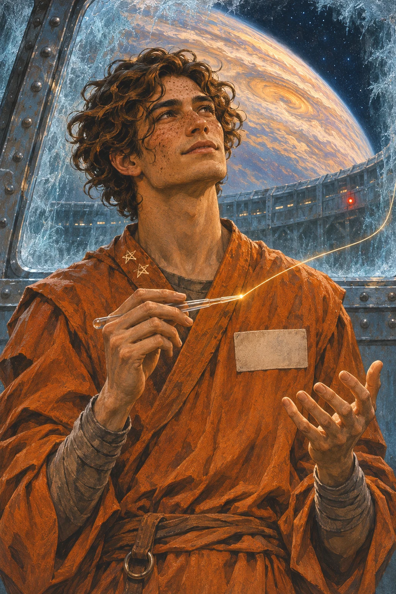
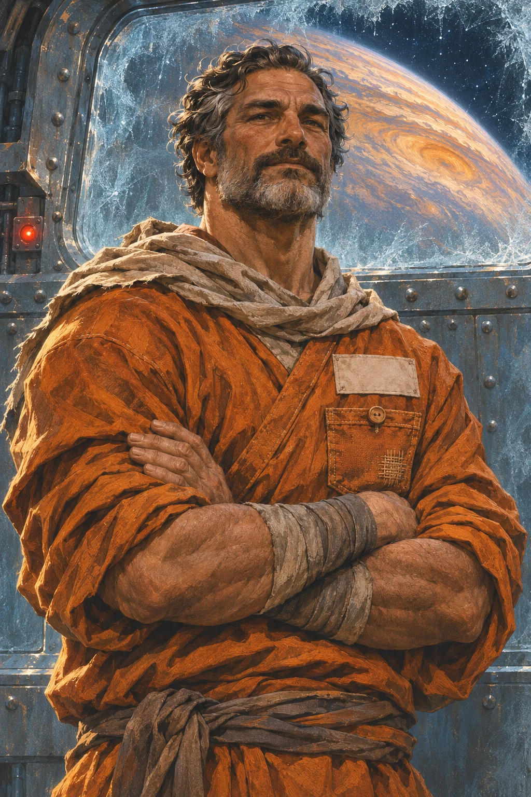
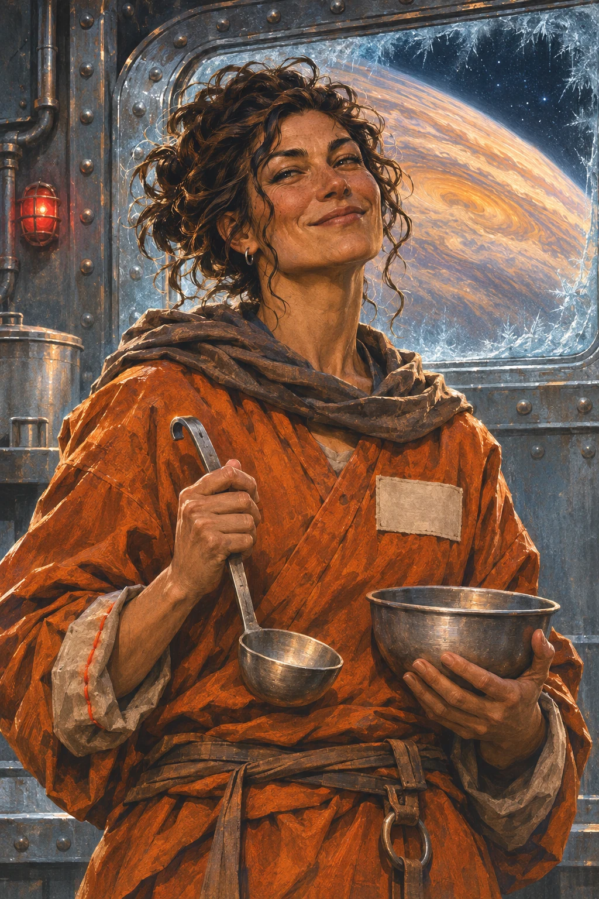

Мир и начало
«Нитка» обращается над облачной планетой Кордея: кольцо жилых блоков, прозрачные переходы на рядах заклёпок, обзорная галерея и причалы. За стеклом — тишина и вакуум; внутри время меряют перекличками: утром, днём и вечером номера на робах читают вслух. Правила — поддержанные классы третьего уровня, научная фантастика здесь лишь оболочка: воин — защитник экипажа, плут — переговорщик, жрец — полевой медик с псионическим даром, волшебник — специалист по световым проекциям. Лучевое копьё охраны, псионическое лечение и световой щит имеют характеристики обычных оружия и заклинаний. Новых правил взлома, навигации и боя кораблей нет. Для финального выхода на внешнюю обшивку есть одно простое вымышленное правило: страховочные кольца, магнитные подошвы, запас воздуха в раундах и огонь из окон. Допуски, пломбы и коды в игре — вымышленные разрешения; как они работают, не описывается.
Шесть дней назад в рубку спасательного буксира «Стриж» пришёл вызов по открытой частоте. Незнакомый голос говорил ровно, по-диспетчерски, и повторял одно: на Двадцатом причале «Нитки» люди, давление падает. Причал был закрыт приказом, и диспетчерская станции запретила к нему подходить. «Стриж» подошёл всё равно. Буксир пристыковался к запертому захвату и снял с парома всех тридцать одного человека — заключённых, которых везли на перевод, и команду. Чтобы отойти, захват пришлось рвать, и грейфер вырвал его вместе с куском кольца. Никто не погиб. Экипаж «Стрижа» арестовали за нарушение закрытия, а журнал буксира изъяли.
Теперь тюремный катер везёт вас туда же, на «Нитку». Станция висит над Кордеей — планетой, которую отсюда никто не видел без облаков: белые и серые полосы медленно текут под кольцом, и кажется, что станция стоит, а мир проходит под ней мимо. «Нитка» — пересадочная тюрьма. Здесь не отбывают срок, здесь ждут перевода: кольцо жилых блоков, прозрачные переходы на рядах заклёпок, обзорная галерея, причалы. За стеклом вакуум и полная тишина. Внутри время меряют перекличками: утром, днём и вечером номера на робах читают вслух, и каждый номер должен ответить.
Конвоир катера зачитывает решение один раз, не поднимая глаз от планшета: восемь суток на «Нитке», затем заключительный перевод. Экипаж разведут по разным направлениям, по одному-двое, и после этого вы друг друга больше не увидите.
Катер касается шлюза мягко, почти без толчка. В Приёмном колесе пахнет холодным металлом и свежей краской. Вдоль стены стоят ящики для личных вещей, на скамьях сложены серые робы, и на каждой белым трафаретом выведен номер: Т-20-01, Т-20-02 и дальше по порядку. Женщина в форме, со светлыми ресницами и карандашом за ухом, поднимает голову от списка на дощечке: «Экипаж Т-20. Вещи — в ящики. Робы — по номерам. Строиться вдоль заклёпок».

37 лет · воин · уровень 3
Севра Дан
Капитан спасательного буксира «Стриж»; первой входит в опасное помещение и последней выходит
Хиты 31 · КД 11 · Скорость 30 футов
СИЛ 16 · ЛОВ 12 · ТЕЛ 16 · ИНТ 10 · МДР 12 · ХАР 10
Длинный меч, ручной топор.
Коротко остриженные седые виски, на робе свежий трафарет Т-20-01 и привычка проверять, всем ли хватило места в строю.
Вы приказали пристыковаться к закрытому Двадцатому причалу и рвать запертый захват. Тридцать один человек жив. Станция называет это нарушением, вы называете это работой. Решите, за какую часть этого вы готовы отвечать вслух.
Связь
Бор выполнил ваш приказ рвать захват, хотя считал его опасным. Спросите его, что ему нужно услышать, прежде чем вы снова что-то прикажете.
В центре внимания
Принимать капитанские решения, когда времени мало, и называть их цену вслух; защищать право товарища отказаться от рискованной задачи; вести людей по внешней обшивке.
Личный вопрос
Как вы поймёте, что экипаж идёт за вами по своей воле, а не по привычке?

28 лет · плут · уровень 3
Мир Авель
Диспетчер пассажиров и наблюдательный посредник
Хиты 24 · КД 13 · Скорость 30 футов
СИЛ 10 · ЛОВ 16 · ТЕЛ 14 · ИНТ 14 · МДР 12 · ХАР 12
Рапира, короткий лук.
Неровная чёлка, разноцветные шнурки, номер Т-20-02 на робе и записная книжка, где вместо номеров нарисованы лица.
Вы приняли вызов с Двадцатого: незнакомый голос, давление падает. В вашей книжке теперь тридцать одно лицо. Вы запоминаете человека раньше, чем его номер, и на «Нитке» это полезный дар и тяжёлая ноша: нельзя обещать место каждому, чьё лицо вы нарисовали.
Связь
Агата — а если её нет за столом, Нара — замечает, когда вы улыбаетесь из страха. Договоритесь, каким обычным жестом она поможет вам остановить невыгодный разговор.
В центре внимания
Узнавать людей по голосу и лицу; завязывать личные связи у Окна заявлений и за Длинным столом; находить обходной социальный путь там, где охрана видит только номера.
Личный вопрос
Чьё имя вы произнесёте вслух, даже если выгоднее промолчать?

42 лет · жрец · уровень 3
Нара Вель
Полевой медик с псионическим даром
Хиты 24 · КД 11 · Скорость 30 футов
СИЛ 12 · ЛОВ 12 · ТЕЛ 14 · ИНТ 10 · МДР 16 · ХАР 14
Посох. Заклинания: «Лечащее слово», «Обнаружение магии».
Мягкий голос, прозрачный браслет с засушенным лепестком, номер Т-20-03 на робе и рукава, аккуратно подвёрнутые перед любой работой.
В трюме «Стрижа» вы лечили спасённых с Двадцатого причала, и с тех пор не умеете молчать, когда молчат другие. На «Нитке» ваше молчание или ваш ответ на номер тоже станет поступком.
Связь
Илай однажды отвлекал толпу, пока вы работали. Спросите, как он подаст знак, если больше не сможет держать улыбку.
В центре внимания
Работать в Тихом лазарете рядом с врачом станции; беречь согласие тех, кто не хочет говорить; решать, кому и когда отдать свою помощь.
Личный вопрос
Когда забота требует позволить другому человеку принять риск?

25 лет · волшебник · уровень 3
Илай Рош
Специалист по световым проекциям и псионическим щитам
Хиты 20 · КД 12 · Скорость 30 футов
СИЛ 8 · ЛОВ 14 · ТЕЛ 14 · ИНТ 16 · МДР 12 · ХАР 12
Посох. Заклинания: «Обнаружение магии», «Туманный шаг».
Длинные пальцы, веснушки, номер Т-20-04 на робе и два рисунка звёзд на воротнике; при волнении объясняет сложное с помощью кружек.
Вы вели людей по тёмному причалу световой дорожкой на стенах. Раньше ваш свет успокаивал пассажиров. Теперь вы хотите вывести на стекло что-то, что нельзя будет назвать красивой ложью.
Связь
Севра доверила вам последнее объявление на буксире. Решите вместе, какие слова с него экипаж запомнил.
В центре внимания
Мыть стёкла Стеклянного обхода и видеть то, что видит охрана; выводить на стекло свет и слова; отличать впечатление от доказательства.
Личный вопрос
Что вы готовы показать всем, а что оставите для своих?

46 лет · воин · уровень 3
Бор Камен
Старший грузовой смены и защитник пассажиров
Хиты 31 · КД 11 · Скорость 30 футов
СИЛ 16 · ЛОВ 12 · ТЕЛ 16 · ИНТ 10 · МДР 12 · ХАР 10
Длинный меч, ручной топор.
Широкие плечи, номер Т-20-05 на робе, аккуратно заштопанный карман и деревянная пуговица, которую он хранит как семейную вещь.
Это ваш грейфер вырвал захват Двадцатого вместе с куском кольца, и эту рану в окне вы видите каждый день. Вы готовы отвечать за неё, но не так, как хочет станция, и не всю жизнь служа чужой стеной.
Связь
Нара однажды заставила вас отдохнуть. Спросите, какую помощь она согласится принять от вас без спора.
В центре внимания
Работать на Палубе грузовых смен; прикрывать товарищей в схватке и выбирать цель, которая не требует победы над всеми; принимать груз и открывать путь к мачте.
Личный вопрос
Кто прикроет вас, когда вы сами решите идти первым?

34 лет · плут · уровень 3
Агата Лун
Корабельный снабженец, повар и мастер договорённостей
Хиты 24 · КД 13 · Скорость 30 футов
СИЛ 10 · ЛОВ 16 · ТЕЛ 14 · ИНТ 14 · МДР 12 · ХАР 12
Рапира, короткий лук.
Косая улыбка, яркая нитка в манжете, номер Т-20-06 на робе и привычка оставлять последнюю ложку каши на общей тарелке.
В трюме «Стрижа» вы кормили тридцать одного человека из запаса на шестерых. На кухне Длинного стола вы снова считаете порции и долги, и вы знаете разницу между подарком и долгом, хотя здесь все стараются её стереть.
Связь
Мир однажды обещал больше, чем вы могли выдать. Выберите смешную деталь того случая и договоритесь, как теперь проверяете обещания друг друга.
В центре внимания
Работать на кухне Длинного стола и вести сделки с Сором Даром; называть настоящую цену услуги; оставлять собеседнику достойный способ уступить.
Личный вопрос
Какую помощь вы окажете, заранее отказавшись от платы?

30 лет · жрец · уровень 3
Юна Ис
Пассажирский куратор и псионический утешитель; дополнительное место
Хиты 24 · КД 11 · Скорость 30 футов
СИЛ 12 · ЛОВ 12 · ТЕЛ 14 · ИНТ 10 · МДР 16 · ХАР 14
Посох. Заклинания: «Лечащее слово», «Обнаружение магии».
Тёмные волосы собраны широким кольцом, на робе Т-20-07; на ладони нарисована маленькая дверь, которую она обновляет каждое утро.
Вы записывали сообщения спасённых родным. Одно из них до сих пор не отправлено, и вы ещё не решили, что оно должно сказать теперь, когда адресат далеко, а вы за стеклом.
Связь
Нара знает, что спокойствие бывает работой. Обсудите, каким правом на молчание вы будете защищать друг друга.
В центре внимания
Помогать в Тихом лазарете вместе с Нарой; сидеть у коек тех, кто не хочет говорить; решать, какое сообщение уйдёт со станции.
Личный вопрос
Что вы расскажете о заключении по собственному желанию?

40 лет · волшебник · уровень 3
Дамир Олль
Хранитель корабельных записей и световых историй; дополнительное место
Хиты 20 · КД 12 · Скорость 30 футов
СИЛ 8 · ЛОВ 14 · ТЕЛ 14 · ИНТ 16 · МДР 12 · ХАР 12
Посох. Заклинания: «Обнаружение магии», «Туманный шаг».
Крупные очки, залатанный локоть, номер Т-20-08 на робе и манера оставлять рядом с точным фактом место для чужого комментария.
Вы вели журнал «Стрижа». Станция его изъяла, и теперь о той ночи на Двадцатом помните только вы. Нужно решить, какие истории вы имеете право унести наружу.
Связь
Бор когда-то попросил не включать его поступок в праздничный рассказ. Спросите, действует ли эта просьба до сих пор.
В центре внимания
Разбирать бумаги в архиве за Окном заявлений рядом с Миром; держать копии и память о том, что было; предлагать понятный план и не присваивать чужую историю.
Личный вопрос
Какое обещание вы сохраните, даже если его никто не сможет проверить?